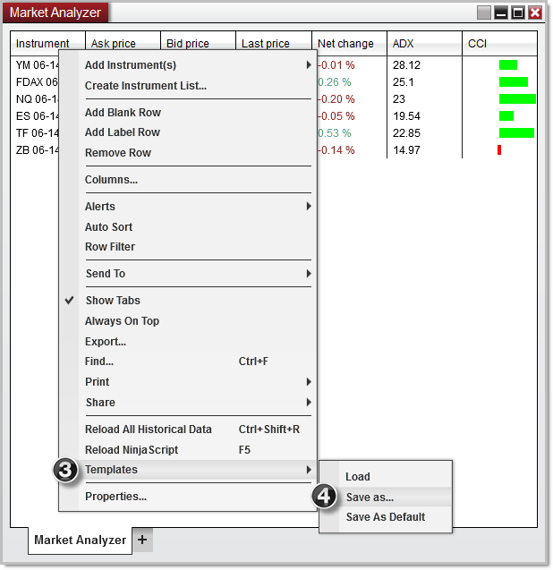
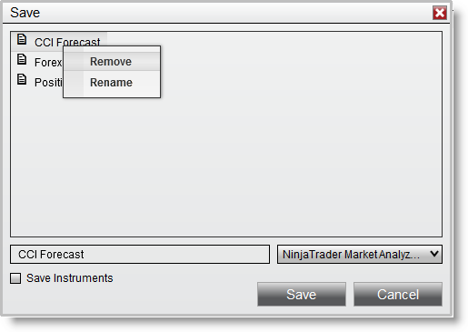

|
<< Click to Display Table of Contents >> Working with Templates |


|
Working with Templates
|
<< Click to Display Table of Contents >> Working with Templates |
|
NinjaTrader allows you to save your customized Market Analyzer layout as a template that can be loaded in an open Market Analyzer or set as the default for new Market Analyzer windows.
 How to save a Market Analyzer Template
How to save a Market Analyzer Template
What is SavedThe following are saved within a Market Analyzer template:
•Column layout •Column parameters and conditions •Market Analyzer properties •Instrument Rows
Saving a Market Analyzer TemplateTo save a Market Analyzer template (shown in the image below):
1.Configure your desired Market Analyzer columns and properties ( see the "Working with Columns" and "Market Analyzer Properties" sections of the Help Guide for more information) 2.Right mouse click within the Market Analyzer 3.Select the menu item Templates 4.Select the menu item Save As... (You can optionally select the menu item Save As Default to save the current settings as default. Any new Market Analyzer will load with these new default settings)

5. Enter a name for your Market Analyzer template 6. Optionally check Save Instruments to save the current display of instrument rows in the Market Analyzer template 7. Press the Save button |
 How to load a Market Analyzer Template
How to load a Market Analyzer Template
Loading a Market Analyzer TemplateTo load a saved Market Analyzer template:
1.Right mouse click within the Market Analyzer 2.Select the menu item Templates 3.Select the menu item Load 4.Select the template you wish to load from the Load dialog menu and press the OK button |
 How to remove a Market Analyzer Template
How to remove a Market Analyzer Template
Removing a Market Analyzer TemplateTo remove a saved Market Analyzer template:
1.Right mouse click within the Market Analyzer 2.Select the menu item Templates 3.Select the menu item Load 4.Right click on the template you wish to remove from the Load dialog menu and select the Remove menu item

|